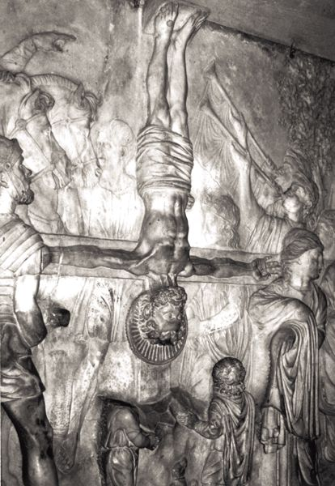

These three letters are typically numbered among the NT “catholic letters.” This implies that they lack the specificity of address of, say, Paul’s letters to the Corinthians or Thessalonians; they are “catholic” (“general, universal”) in this sense. This designation and their location in the NT also speak to their function within the canon. They appear in the second of two collections of letters, the first comprising the correspondence attributed to Paul and the second the series of NT documents from Hebrews through Jude. As letters these materials are recognized as attempts to address needs that arose in communities struggling to embody within their common lives the message of the gospel. The presence of two letter collections reminds us that even earliest Christianity was not univocal in its understanding of the gospel. The diversity of concerns addressed and modes of addressing those concerns within and between these two sets of letters points to the self-correcting and mutually informing conception of Christian discipleship. Study of 1–2 Peter and Jude, among the catholic letters, then, should serve to assist the church in avoiding the reductionism of its understanding of the Christian message to the Pauline apostolate. For understanding the NT and earliest Christianity, Paul’s is an important voice but not the only one.
At the same time, it must be noticed that inclusion of these three letters among the “catholic” collection represents a distortion of their historical address. Jude, for example, is a genuine letter, developed for and sent to a real audience in the context of a particular set of circumstances. The salutation of 1 Peter specifies an implied readership that is not universal (even in the ancient sense of “addressed to the whole Roman world”) but rather located in five geographic areas of Asia Minor (i.e., modern Turkey). 2 Peter probably shared a similar address (3:1: “Beloved, this is now the second letter I am writing to you . . .”). These facts do not render the category “catholic” altogether specious but require that it be nuanced somewhat in order to allow our reading of these letters within their own sociohistorical contingencies and not as context-less documents.
| Jude 17–18 | 2 Pet 3:1–3 |
| But you, beloved, should remember the predictions of the apostles of our Lord Jesus Christ — that they said to you, “In the final time there will be scoffers who will indulge their own ungodly lusts.” | Beloved . . . you should remember the predictions of the holy prophets and the commandments of the Lord and Savior through your apostles. First, you must understand this, that in the final days scoffers will come, scoffing, indulging their own lusts. . . . |
These letters are often treated together, the first two for reasons more apparent than the third. As their titles indicate, 1 and 2 Peter are both attributed to the apostle Peter, and this has led to their being examined side-by-side in order to ascertain a possible “Petrine” gospel. The prospect of their being used in this way has been complicated by persistent questions regarding the authorship of both. Less obvious at a superficial level but more consequential is the correlation of 2 Peter and Jude. To close readers of these two letters, some sort of literary relationship is evident — particularly with reference to Jude 4–13, 17–18 and 2 Pet 2:1–18; 3:1–3.
Among the possible explanations for this correspondence, the two that have attracted the most support are Jude’s dependence on 2 Peter and 2 Peter’s dependence on Jude. How one adjudicates between these choices is dependent on how one settles issues of authorship and dating and on the opinion one forms concerning the soundness and style of these letters. What this level of accord between the two does not require is that we assume that both letters arose from and/or were designed to address comparable circumstances or that they must share a singular theological perspective. As in other instances of intertextuality, the appearance of a prior (or sub-) text in a fresh co-text invites reflection on how that subtext functions in its new setting; the presence of both lingering similarities and striking dissimilarities is not only conceivable but almost guaranteed. In the end, this requires that each of these documents be read first on its own terms, against its own sociocultural horizons, and within its own world of meaning. Irrespective of any literary relationship between 2 Peter and Jude, moreover, given its canonical title and attribution to the apostle Peter, 2 Peter invites theological reflection in relation to 1 Peter.
According to the author’s own description, 1 Peter is “a brief letter” written to encourage and instruct (parakaleō) its recipients and to testify concerning the grace of God (5:12). Who are these recipients, and what is their situation? The question of the provenance of 1 Peter is intimately tied to the issue of authorship.
The document itself is cast in the form of a letter, complete with identification of the author (“Peter, an apostle of Jesus Christ”) and addressees (“to the exiles of the dispersion, 1:1) in its introduction, and the expected greeting (from “Babylon,” i.e., Rome) in its conclusion (5:12–14). Its lack of greater specificity in its address marks it as a circular letter (cf. Acts 15:23–29; Col 4:16). This is a form otherwise known in OT and Second Temple Jewish literature, where it was used to address the people of God in particular locales — “the Jews in Egypt” (2 Macc 1:1–2:18) or the Jewish exiles in Babylon (e.g., Jer 9:4–23; 2 Baruch 78–86; cf. Jas 1:1). Of course, in the case of 1 Peter, the “diaspora letter” has its origin in Babylon rather than its having been sent to the Babylonian exiles, but in other respects we find analogous perspectives when comparing this document with the relevant portion of 2 Baruch. This is true not least in their perspective on suffering as a minority under foreign rule, leading to the possibility that the author of 1 Peter was consciously influenced by the form of a circular diaspora letter recognized among the Jewish people.

A relief representation of Peter crucified upside-down (W. S. LaSor)
22.2.1. The Addressees
What might this entail concerning this author’s audience? Less than one might think. This is because the content of 1 Peter seems to vacillate with reference to the ethnic identity of its implied readership.
The form of the letter, together with the opening phrase “exiles of the dispersion” (1:1), suggests an audience of Jewish Christians in Asia Minor. This possibility is supported by the significant and abundant use of the OT throughout the letter and especially by the repeated identification of its readers as Israel and the silence with regard to the tensions arising from having Gentiles and Jews together in the churches. What is more, persons outside the community are called “Gentiles” (2:12; 4:3). Given the attribution of this letter to Peter, it is also of interest that, according to Paul, Peter’s mission was to the Jews (Gal 2:7).
On the other hand, repeated references to the pagan character of their background suggest strongly that the majority of the addressees were in fact Gentiles (1:14, 18; 2:10, 25; 4:3–4). The comment that prior to their conversion they had neither faith nor hope in God (1:21) likewise urges their identification as Gentiles. What of evidence to the contrary? With respect to the importance of the OT to this letter, it must not be forgotten that the OT was the Bible of earliest Christianity, so that we would be amiss to suppose that even Gentile converts would not know its content well. Peter himself is known to have had a ministry in the Gentile world (see Acts 10:1–11:18; 1 Cor 1:12). Most importantly, 1 Peter employs as a central motif the identification of Israel and the church, with the result that normal usage of such terms as “Jewish” or “Gentile” cannot be assumed. The new people of God envisioned in this letter is none other than the people of Israel — so this document’s “Jewishness” insinuates less a description of the ethnic origins of its implied audience than a clarification of its readers’ status before God.
This means that Peter’s “exiles” and “aliens” are foreigners in an important but metaphorical sense. They are not “Jews” living among “Gentiles” in the expected sense of these terms, as though the author were concerned with their ethnic or political status. Attempts to find in Peter’s descriptive terms a reference to his readers’ economic status founders similarly on a problem of category. Whether a person was “rich” or “poor,” as we have come to understand these terms in the last two centuries in the West, was of relatively little consequence in Roman antiquity. Having little income did not of necessity deprive one of family and friends, just as having great wealth did not of necessity guarantee that one might exercise elevated power and privilege in society. One’s social status was a product of numerous intersecting considerations, relative income or access to the means of production only one of them (see chapter 2). In fact, there is no basis within the letter itself for suggesting that Peter’s audience occupied any rung on the ladder of economic measurement other than would have been characteristic of first-century Christians as a whole; hence, one might expect his readers to represent the broad spectrum of people living in Asia Minor, other than those of the ruling elite.
If not in a political, ethnic, or economic sense, how should we think of 1 Peter’s “exiles” and “aliens”? On this, the letter is actually quite straightforward. These are people whose commitment to the lordship of Jesus Christ have led to transformed attitudes and behaviors that place them on the margins of respectable society. They have become the victims of social ostracism, their allegiance to Christ having won for them slander, animosity, reproach, scorn, vilification, and contempt. In the larger world, status was achieved by conformity to dispositions that had become so conventional that they were largely unspoken, taken for granted; noncompliance and other forms of social distinctiveness were regarded negatively. Rich or poor in economic terms, born into a good family or bad — these and other factors paled into insignificance for the readers of 1 Peter, whose reformed allegiances and transfigured practices distinguished them from Roman society. Previously, they had participated in the mainstream of Greco-Roman society, but now their lack of acculturation to prevailing social values marked them as social misfits to be held in contempt. 1 Peter was written to address Christians in such general circumstances as these — not so much to resolve the enigma of the suffering of God’s people as to articulate how best to relate to a society set against those allegiances, attitudes, and actions that are consistent with God’s agenda.
22.2.2. Author and Setting
By whom was this letter written? In spite of the clear identification of the author as “Peter, an apostle of Jesus Christ” (1:1), doubts about Petrine authorship continue to linger. This is primarily because the letter’s author evidences relatively superior facility in Greek (relative, that is, to other forms of NT Greek), employs the OT in its Greek version rather than in Hebrew, and manifests some training in the canons of Greco-Roman rhetoric. In short, it is doubted whether Peter the Galilean fisherman would have been capable of authoring such a document. Such considerations are easily laid to rest, however, by the implication of 1:1 and 5:12 that Peter commissioned this letter, not actually writing it — a task that would have been undertaken, then, by Sylvanus, “a faithful brother.” Again, then, we are presented with the difficulties resident in our quite modern notions of “authorship,” notions that do not typically allow for the continuum of influence and participation by individuals and communities in the Old and New Testaments. Assuming that the figure of Peter stands immediately behind the writing of this document, this would require that the letter originated prior to his martyrdom (ca. 64–65 CE).
Scholars seeking to locate more precisely the historical situation about which Peter is concerned in this letter have sometimes pointed to the period of the persecution of Christians under Nero in the 60s. This would make sense of references to malice, imprisonment, the “fiery ordeal,” and the general feeling of apprehension that characterizes the document as a whole (see 4:4, 12, 16). Such specificity actually introduces more problems than it solves, however, since it would require Peter to have addressed a situation in which he himself, and not his audience in Asia Minor, was embroiled. The Neronian persecution, after all, was localized in the vicinity of the city of Rome, but 1 Peter implies that it is the Christian population of Asia Minor that is caught up in marginality and scorn. In fact, specificity at this level is unnecessary, since nowhere does Peter imply that the persecution being experienced by his readers carried with it the legitimacy of Roman decree. Christians in the first-century Mediterranean world would have attracted widespread but localized ill will for their failure to participate in the religious celebrations that permeated Roman culture — some in honor of the goddess of Rome herself, Roma, others in honor of the emperor and his divine attributes, and so on. Failing to associate themselves with these religiocultural activities, Christians would have invited social ostracism and other forms of harassment. Indeed, their behaviors would have been perceived by the general populace as antisocial, perhaps even bordering on the unlawful; failing to participate in these activities, they would have been charged with bringing on the city or town the disfavor of the gods. Official Roman policy need not have dictated action against Christians for followers of Jesus as Lord to be subjected to mob action on account of their association with the name of Christ.
If it is impossible to associate the historical situation of 1 Peter with official persecution under Nero, the same may be said of other official actions against Christians under the emperors Domitian (81–96) and Trajan (97–117). Like the situation under Nero, so in these later cases we are not to imagine a formally mandated, empire-wide persecution of Christians.
The presence of unofficial harassment instigated by the populace in areas throughout the empire is easier to imagine, even if it is also more difficult to use as a means of dating 1 Peter. It is of interest, though, that the book of Revelation, written in the mid-90s, takes a much less generous view of the Roman government than does 1 Peter. Peter is under the impression that the government is both capable of and committed to fulfilling its divine mandate “to punish those who do wrong and honor those who do right” (2:13). John’s social analysis has led him to a quite different conclusion. He views the empire as a blasphemous power that has set itself over against the will of God and thus against the people of God. Since the audiences of 1 Peter and Revelation overlap significantly (see Revelation 2–3), it would appear that John wrote at a time when relations with the Roman world had further deteriorated. This again would support an earlier rather than later dating of 1 Peter.
Nevertheless, the message of 1 Peter would not be unduly altered were we to locate its origins later in the first century. Its use of “Babylon” as a byname for Rome may point to such a later occasion, since this appellation gained currency only in the last three decades of the first century. Of course, dating the letter during this period would rule out the possibility of Peter’s direct involvement in its content, in which case one might posit another leader associated with the apostle within the Christian communities of Rome. Early or late, the same social setting is plausible — social ostracism as a form of persecution instigated by popular sentiment.
With regard to the authorship of 1 Peter, a further issue that has troubled some is its apparent lack of a distinctive Petrine theology. More than one modern reader of 1 Peter has quipped that, apart from the direct attestation of the document to Peter, one could have imagined that the letter was penned by Paul. Affinities with James and with other NT documents are also easy to document. Such thinking begs the important question, What do we know of Peter’s theology, apart from the correspondence that has come to us in his name? The ancient tradition that relates the origins of the Gospel of Mark to the apostle Peter, even when taken at face value, does not suggest that we have direct access through the Second Gospel to Peter’s understanding of the faith (see above, chapter 6). Nor do the speeches attributed to Peter in Acts give us such access, since they have been shaped by their appropriation within the Lukan narrative. Hence, we lack unimpeachable canons against which to measure how “Petrine” 1 Peter actually is.
22.2.3. The Letter’s Place in Early Christianity
What is evident is the remarkable degree to which the thought of 1 Peter belongs within the mainstream of early Christian thought as this is represented in the NT. Several common strands are woven together.
(1) At several points, 1 Peter appears to reflect traditions about Jesus underlying the Gospels. Perhaps as many as a score of such parallels between 1 Peter and the Gospel tradition have been identified. This congruence not only points to the familiarity of the author of 1 Peter with Jesus material, but also raises the question how that material has been deployed in this letter to “exiles in the dispersion.” Three comments are apropos. First, it is clear that Peter views the present experience of Christians in the Roman provinces of Asia Minor in relation to Jesus’ prediction of the certainty, perhaps even inevitability, of suffering for those who follow in his footsteps. Since Jesus anticipated such situations, they should neither come as a surprise to his followers nor be taken as evidence that his followers have brought suffering on themselves by stepping outside the will of God. As Peter writes, “Beloved, do not be surprised at the fiery ordeal that is taking place among you, as though something strange were happening to you” (4:12). Instead, Peter advises, drawing on the pattern of Jesus’ own career, present suffering is the context for faithful perseverance and the harbinger of restoration and glory (4:13; 5:10). Third, in this new historical context, Peter has translated Jesus’ command, “Love your enemies, do good to those who hate you” (e.g., Luke 6:27), into a commission for Christian behavior in this oppressive social setting.
| Some Jesus Traditions in 1 Peter | |
| 1 Pet 3:9: “Do not repay evil for evil or abuse for abuse; rather, repay with a blessing.” | Luke 6:28: “Bless those who curse you.” |
| 1 Pet 3:14: “But even if you do suffer for doing what is right, you are blessed.” | Luke 6:10: “Blessed are you when people hate you, and when they exclude you, revile you, and defame you on account of the Son of man.” Matt 5:10: “Blessed are those who are persecuted for righteousness’ sake. . . .” |
| 1 Pet 2:12: “Conduct yourselves honorably among the Gentiles, so that, though they malign you as though you were evildoers, they may see your honorable deeds and glorify God when he comes to judge.” | Matt 5:16: “Let your light shine before people in order that they might see your good works and glorify your heavenly Father.” |
| 1 Peter, Romans, and James | |
| 1 Pet 1:14: “Like obedient children, do not be conformed to the desires that you formerly had in ignorance.” | Rom 12:2: “Do not be conformed to this world. . . .” |
| 1 Pet 4:10–11: “Like good stewards of the manifold grace of God, serve one another with whatever gift each of you has received. Whoever speaks must do so as one speaking the very words of God; whoever serves must do so with the strength that God supplies. . . .” | Rom 12:6–7: “We have gifts that differ according to the grace given to us: prophesy, in proportion to faith; service in serving. . . .” |
| 1 Pet 1:6–7: “In this you rejoice, even if now for a little while you have had to suffer various trials, so that the genuineness of your faith . . . may be found to result in praise and glory and honor when Jesus Christ is revealed.” | Rom 5:3–5: “We also boast in our sufferings, knowing that suffering produces endurance, endurance produces character, character produces hope, and hope does not disappoint us, because God’s love has been poured into our hearts through the Holy Spirit that has been given to us.” Jas 1:2–3: “Consider it all joy when you face all kinds of trials, knowing that the testing of your faith produces endurance; and let endurance have its full effect, so that you may be mature and complete, lacking in nothing.” |
(2) The congruity between 1 Peter and other NT texts is also plentiful and pervasive, more than enough to indicate the conformity of this letter to the trajectory of Christian tradition and interpretation otherwise present in the NT. But Peter is doing more than mimicking early tradition. In the same regard one may also point to the use of presumed liturgical traditions in 1 Peter, such as, for example, the hymnic or confessional material in 1:18–21; 2:21–25; 3:18–22. All this is to say that 1 Peter participates in the process of drawing on and reformulating the developing tradition of the church as it seeks to instruct and encourage Christians in Asia Minor. Peter appears to have his own access to elements of the tradition also picked up by Matthew and Luke, Paul and James, and others, and, like them, he embeds those materials within his own constructive thought as he addresses the needs of his audience. In this way, he indicates the immediate relevance of the gospel to the conditions of his readers.
| Other Parallels in 1 Peter | |
| 1 Pet 2:6–8 | Rom 9:32–33 |
| 1 Pet 2:13–17 | Rom 13:1–7 |
| 1 Pet 3:8–9 | Rom 12:16–17 |
| 1 Pet 1:3 | Eph 1:3 |
| 1 Pet 1:10–12 | Eph 3:5 |
| 1 Pet 1:14 | Eph 2:2–3 |
| 1 Pet 2:4–6 | Eph 2:20–22 |
| 1 Pet 3:22 | Eph 1:20–22 |
| 1 Pet 1:23–2:2 | Jas 1:10–11, 18–22 |
| 1 Pet 4:8 | Jas 5:20 |
| 1 Pet 5:5–9 | Jas 4:6–10 |
| 1 Pet 1:1; 2:11 | Heb 11:13 |
| 1 Pet 1:2 | Heb 12:24 |
| 1 Pet 2:25 | Heb 13:20 |
| 1 Pet 3:9 | Heb 12:17 |
| 1 Pet 3:18 | Heb 9:28 |
| 1 Pet 3:18 | Heb 9:28 |
| 1 Pet 4:6 | Hebrews 11 |
| 1 Pet 4:14 | Heb 13:13 |
(3) First Peter teems with citations and allusions from the OT, especially the Psalms, Proverbs, and Isaiah; in fact, the OT is the source of virtually all the metaphors used in the letter. The immediate effect of the use of Israel’s Scriptures in 1 Peter is to root fundamentally both the message of this letter and, just as importantly, the identity of its readers in scriptural authority. Also worth noting is how the author of 1 Peter employs Scripture in ways comparable to those of other NT writers. For example, one can compare the drawing together of OT texts in 1 Pet 2:4–10 with a similar exegetical argument in Rom 9:25–33. This demonstrates again how seeped in Christian tradition 1 Peter is, including the selection and interpretation of OT texts.
(4) Finally, we may turn attention to the use of “household duty codes.” Such codes (sometimes known by their German name Haustafeln) were known throughout the Greco-Roman world, including the world of Hellenistic Judaism (e.g., Josephus, Ap. 1.190–210; Philo, De Decalogo 165–67) and the literature of the NT (Eph 5:21–6:9; Col 3:18–4:1; 1 Pet 2:13–3:12). Typically characterized by a mutuality of relationships within the household — husbands/wives, slaves/masters, etc. — these codes embodied basic socioeconomic values in Roman culture. That is, they articulated in concrete terms lines of authority and submission and the duties of obligation categories of people such as men, women, children, and slaves (see pp. 387–88 above). Because they were based on the fundamental understanding of the human community assumed and propagated by the Roman Empire, any attempt to subvert their categories would be viewed as a threat to the glue of the empire itself.
22.2.4. The Household Code’s Place in the Letter
According to the NT evidence, Christian communities did not merely absorb Roman household codes into their common life, but “baptized” them, adapting them to the demands of the Christians’ faith commitments. Christian innovations included the introduction of a call to mutual submission as an interpretive heading for the household code (Eph 5:21), the introduction of the phrase “in Christ” as part of formulating a new set of norms by which to live, and the adaptation of the household code to particular social scenes. As such, the use of household duty codes functioned as rhetorical devices for communicating particular responses in particular social settings and not as pieces of legislation for Christian existence in all times and places. Apparently, the struggle with community identity among believers led to adaptations of normal social institutions as the numerically rather insignificant Christians explored means for coexistence with wider society.
In 1 Peter the household duty material appears immediately after a major shift in the structure of the letter, marked by the address “Beloved, I urge you . . .” in 2:11 (cf. 4:12). Peter has thus turned from an elaborate theological description of his readers’ Christian identity to the behaviors that appropriately follow from their identity. The behavioral distinctives that he begins to enumerate in 2:13 are concrete ways in which his audience is to relate to a social situation in which they have the role of “aliens and exiles.” It has been argued that Peter has adopted the form of the household duty code in order to encourage these Christian believers to adapt themselves more fully to Roman society, so that he would be urging them, for the sake of their own survival, to give up some of their distinctives and to embrace more fully practices deemed honorable in the ancient Mediterranean. But such a reading would require that we view this section of the letter as being in unbending tension with the rest of the letter. What is crucial elsewhere is that one do what is honorable in the sight of the Lord; repeatedly, too, Peter warns his readers to expect nothing less than hostility and slander. More likely, then, the household code has the opposite force. It is designed to warn against compromise with Roman social values even though failure to do so will invite further suffering. This interpretation is borne out by two considerations.
First, the household duty code as it is represented by 1 Peter lacks the formal parallelism expected in materials of this sort. True, husbands are mentioned alongside wives, but the amount of material devoted to wives is far out of proportion to the instruction directed to husbands, and slaves have no counterpart in the list.
Second, at the center of 2:13–3:12 is a section extolling the example of Christ, so that the whole can be understood in terms of an inverted parallelism:
2:13–17: Instruction for everyone
2:18–19: Instruction for slaves
2:20–25: The example of Christ
3:1–7: Instruction for wives and husbands
3:8–12: Instruction for everyone
The pivot point of Peter’s instruction is thus the example of Christ, who suffered unjustly and did not reciprocate with abuse, but rather entrusted himself to the God who judges justly. By emphasizing slaves and wives and correlating their recommended behavior with that of Christ, Peter paints his audience as persons without power and privilege in society. They should expect to be treated like those who are powerless in household relationships, knowing, however, that their appropriate conduct will have a redemptive effect akin to that of Jesus. His death had the effect of restoring those who have gone astray; analogously, maintenance of Christian behavior in the midst of unjust suffering might bring to faith those who presently abuse them (see 2:12; 3:1).
The overall structure of 1 Peter is similar to what one finds in the Pauline letters, particularly as this is shaped by the canons of Greco-Roman rhetoric. 1:1–2 serves as the introduction of the letter, denoting author and audience. 1:3–5:11 constitutes the main body of the letter, and 5:12–14 serves as the letter’s closing. The body of this letter is notoriously difficult to outline, since Peter has provided little in the way of structural markers by which to follow the development of his argument. The address “beloved” appears twice, in 2:11 and 4:12, and this has served to divide the body of the letter into three parts: 1:3–2:10; 2:11–4:11; and 4:12–5:11.
The first part of the letter body has as its focus the identity of God’s people, and this is developed primarily in terms borrowed from the Scriptures of Israel. God’s people should not interpret their suffering as a contradiction of their status before God. Suffering serves rather as proof of their identification with Jesus. Though resident as aliens in this historical time and place, their share in God’s salvation brings with it a living hope and the promise of a new home. As the people of God they are already living new forms of existence oriented toward the values and practices of the new reality of God’s redemptive work. Yet they live in a world very much shaped by old realities; hostility and conflict is therefore almost inevitable. From this concern with the identity of God’s people, 1 Peter moves in its second and third major sections to outline how Christians might comport themselves in these circumstances and place their present trying experiences in proper perspective.
Together with the book of Revelation, 1 Peter is unrivaled among NT documents for its concern with questions of Christian identity, constitution, and behavior in a hostile world. Although their answers differ, the two books are similar in their fundamental orientation to Christ and in their deep-rootedness in Israel’s Scriptures. For 1 Peter, Christian communities, like Israel in the OT narratives, must struggle with how to maintain a peculiar identity as God’s people in the midst of contrary cultural forces of all kinds. This is accomplished by identifying with Christ, both in his suffering and in the promise of restoration and justice. By maintaining their allegiance to the living God, they have a living hope certified by the resurrection of Jesus to life. Their inheritance is nothing less than eschatological salvation — imperishable, uncorrupted, unfading.
One of the more pressing issues underlying any interpretation of 2 Peter is recognition of the sort of document it is. “Genre,” we may recall, is not a package into which one pours content. Instead, decisions about genre associate a literary product with others like it, raising expectations regarding the substance of the document as well as the experience of reading it. “Content” and “form” are not easily separated.
These factors are of special interest in the case of 2 Peter since it represents the fusion of two genres: letter and testament. It actually refers to itself as a letter (3:1), and it takes the form expected of a letter. It opens with a letter opening (1:1–2), with identification of the author (“Simeon Peter”) and the audience (“those who have received a faith . . .”) and the customary greeting (“grace and peace”). From there it proceeds to assert its theme (1:3–11) and occasion (1:12–15) and then goes on to the remainder of the body of the letter. There is no formal letter closing, but this is not without analogy even in Christian letter-writing (see James). Although the designation of the letter’s implied audience may seem rather general or vague, this impression is immediately modified by the actual content of the letter, in which the author addresses a specific occasion, and by 3:1, which reminds the audience of a first letter (presumably 1 Peter) and thus urges the view that the first recipients of 1 and 2 Peter overlapped significantly.
If 2 Peter is a letter, however, it is also manifestly a representative of the “testamentary literature” known in Hellenistic, OT, Second Temple Jewish, and early Christian writing. For example, in the OT we have the addresses attributed to Jacob (Genesis 48–49) and Moses (Deuteronomy 31–34), and in the NT the use of this form is evident in Luke 22; John 13–17; and Acts 20:17–38. Often taking the form of a farewell discourse, the testament gave opportunity for a great leader to recapitulate his teaching and to instruct his progeny or people, often in association with revelations concerning the future. Because such instruction is associated with the final days or hours of a respected figure, these words carry special gravity and focus. The anticipated pattern is replicated in 2 Peter with reference to (1) the précis of Peter’s teaching in 1:3–11, (2) the recognition of Peter’s approaching death and concomitant wish that his message be remembered after his death (1:12–15), and (3) predictions of the rise of false teachers (2:1–3; 3:1–4), against which his teaching is to serve as an antidote.
In the case of 2 Peter, the combination of these two genres has produced an effect that deserves brief exploration. By their nature, letters have the capacity to allow one person or group to communicate with another across geographical distance. Testamentary literature, on the other hand, has as its aim communication with those who are temporally distant. A “testamentary letter,” then, has the capacity to allow an honored figure to speak across time and space — even, as it were, from the grave. Indeed, this seems actually to have been the case with 2 Peter, for here the prophetic voice of Peter is employed to show that circumstances contemporary with the writing of the letter were anticipated long ago by the apostle. And thus the apostolic message was brought directly to bear on a later situation.
The genre of 2 Peter itself thus points to its authorship in the name of, rather than by, the apostle Peter. Of course, the author of 2 Peter is explicit in tying his letter to the apostle — both by introducing Peter’s name in the introduction to the letter and by referring to the previous letter, 1 Peter, in 3:1. Why has the author done so? In all likelihood this was an attempt to inscribe the message of 2 Peter into the authority of the apostle and to bring the weight of the leadership of the church at Rome and thus of its greatest leader into the fight against false teachers. As one of Peter’s associates in Rome, the author has worked to continue Peter’s influence after his death. The procedure adopted by the otherwise unknown author of 2 Peter would have been akin to the practice of those who passed on the words of OT prophets — who spoke their prophecies rather than writing them — and in doing so allowed their influence to be felt in new and changing situations.
What little evidence we have for dating 2 Peter corroborates this perspective on the document. First, in 3:4 we read of the passing of “the ancestors” — undoubtedly a reference to the first generation of Christians, that generation which, it was supposed, was to have seen the second coming of the Lord. When was this generation gone? It is hard to imagine that the “scoffers” could have spoken of “the ancestors” as gone before the 80s of the first century. This date comports well with the second piece of evidence — namely, the reference to Paul’s letters as “Scripture” (3:15–16) — a comment that assumes some sort of collection of Paul’s letters (“all his letters”) and at least the beginnings of a tradition of interpreting them as in some way authoritative for the church. Such a scenario is difficult to date before the closing decades of the first century. Given Peter’s martyrdom in Rome in 64 or 65, this data requires that 2 Peter be attributed to the circle of Peter’s associates rather than to Peter himself.
For some, Peter’s associates writing in Peter’s name entails an act of subterfuge. Three observations militate against such a conclusion. First, the genre of 2 Peter itself promises something other than straightforward authorship. As a “testament,” 2 Peter would have been recognized immediately by persons in the Hellenistic world as a literary fiction with respect to its attribution to Peter. This is the nature of the literary form chosen for this communiqué.
Second, writing in the name of another was widely practiced in Hellenistic Judaism without necessarily raising issues of honesty and deception. Earlier, of course, the speaking prophets’ words were committed to print by other persons, and these are included in the Scriptures of Israel. Later documents circulating in the name of Enoch or Solomon or the Twelve Patriarchs did not raise problems of authorship, in spite of the fact that they could not have been written by those to whom they were attributed. Even Paul knows of a letter written in his name (2 Thess 2:1–2), and it is interesting that the objection he raises is to the content of the letter and not, per se, to the fact that someone had written in his name. Contemporary western sensibilities concerning plagiarism are not easily applied to societies distant from our own — whether geographic or temporal.
Third, 2 Peter gives the impression that its author saw himself (or themselves) as doing nothing more than reformulating the message of the apostle for a new day, and doing so in a way that was faithful to Peter’s own influence and contribution to the faith. And, in including 2 Peter in its Scripture, the church recognized the fundamental coherence of the letter’s message with the apostolic proclamation — a point that cannot be made of many other early documents that carry the name of this apostle.
The immediate occasion of the letter is the emergence of a perceived heresy, with the result that the polemical tone of 2 Peter is especially pronounced. The false teachers against which the message of this testamentary letter is aimed looked with skepticism on the eschatological teaching of the church and argued against any notion of judgment or other intervention by God in the world to bring justice and abolish evil. Instead, the world would continue along its present course undisturbed — a viewpoint much at home among some Hellenistic philosophical circles, such as the Epicureans. Contrary ideas propagated by the apostles were, the false teachers said, invented by the apostles themselves, who were intent on using the heavy hand of fear of judgment to control behavior in the believing community. Even OT texts mined for their eschatological content are said by the false teachers to have been erroneous. But these teachers, having renounced eschatological expectation and the related notion of divine judgment, also loosened ethical mores: “They have left the straight road and have gone astray” (2:15).
Against this perspective, 2 Peter launches a virtual phalanx of rebuttals:
• It defends the eschatological message of the apostles by recalling the apostles’ eyewitness testimony to the transfiguration of Jesus, at which time Jesus was appointed by God to a future role of eschatological rule and judgment (1:16–18).
• It grounds the apostolic message in the Scriptures, argues for the divine inspiration of the Scriptures, and insists that their meaning is not to be renegotiated according to the whims of every person (1:19–21).
• It underscores the certainty of judgment (2:3–10) and warns the opponents that divine judgment will envelop them, too, on account of their false teaching and influence (2:1–3).
• It insists that the fate of the world has always been and continues to be in the hands of God (3:5–7).
• And, employing traditional Jewish thought, it observes that the perception of delay with regard to Jesus’ return is due to a misunderstanding of the nature of time, is a failure to appreciate that the Lord allows further opportunity for repentance, and is not a sign that the apostolic message is wrong (3:8–10).
Intermingled with the development of his argument, the author has placed material of a more testamentary nature. This allows him to highlight the faithfulness of the apostle Peter, who is thus seen earlier to have predicted the rise of false teachers such as those 2 Peter is written to combat. Peter’s prophecies are even now being fulfilled, allowing the author to interpret the presence of these false teachers as a part of revealed history and thus to undermine their influence.
2 Peter testifies to the inseparable connection between theology and morality — or, in this case, between eschatology and ethics. On the one hand, the author can draw an unmistakable line from denial of eschatological judgment to entanglement in worldly defilements. On the other, he can affirm the eschatological vision of divine intervention, then ask, “What sort of people ought you to be?” For him, the apostolic message regarding the end times has as its immediate corollary lives of holiness, godliness, peace, and purity (3:11–14).
In spite of its inclusion among the so-called “general” or “catholic” letters, Jude, too, is a genuine piece of correspondence. It has the generic features of a letter — the introduction naming the sender as “Jude, a servant of Jesus Christ and brother of James” and receivers as “those who are called and loved in God the Father and kept for Jesus Christ” and providing initial greetings (vv. 1–2), followed by statements of focus and occasion (vv. 3–4) and the main body of the letter (vv. 5–23). A rich doxology closes the document (vv. 24–25). One might have expected more by way of information about Jude’s implied audience, but the content of the letter intimates that its message is not concerned with heresy in general. Rather, it is oriented toward particular exigencies as well as, then, a localized audience.
Nevertheless, apart from the formal ingredients expected of a letter, Jude shares a mode of construction perhaps more reminiscent of a sermon or address than of a letter. The interchange of Scripture and interpretation leading to an appeal to the audience suggests very much the self-conscious adoption of a sermonic manner of communicating. In this case, the letter-like form of the document allows, first, a sermonic message to be delivered to an audience geographically removed from the author, the letter functioning as a virtual stand-in for the author. Second, the letter-like form highlights both the occasional nature of this literary product and also its pastoral focus.
That focus is actually two-edged. This sermonic letter contains a relatively lengthy section of polemics against false teachers and thus undergirds the primary aim of its message, which is to appeal to Christian believers “to contend for the faith” (v. 3). What can be said about these false teachers? This group is made up of itinerant charismatics who have infiltrated the church or churches to which Jude addresses his letter. They have substituted the authority of their own charismatic experiences — visions, revelations, and other ecstatic phenomena — for the authority of Scripture (i.e., the law) and the ethical teachings of Christ. This has led them to reject all moral authority so as to indulge in behaviors that contravene traditional Jewish morality; what is more, they teach others to do the same, so that the church is in danger of losing its distinctive identity through increased openness to the pagan practices of the larger society.
It may be that these false teachers have taken some of their initial cues from the apostle Paul, whose gospel emphasized freedom. Paul, of course, also recognized and countered the problems of using freedom as an occasion for indulging sinful appetites. His letters show that he had to help his churches understand his message of freedom within the context of the responsibility of walking in the Spirit, and that very fact is evidence enough of the possibility that teachers such as these would fail to hear or embrace such balance. The first aim of Jude’s letter, then, is to expose these false teachers and their teaching as heretical.
By way of countering these false teachers, Jude engages in a lengthy section of scriptural interpretation (vv. 5–23). The pattern is well known: a reference to a biblical account is followed by its exposition, always with an eye to the contemporary circumstances of Jude’s audience. By this means, these false teachers are branded as nothing more than the latest in a long line of ungodly characters whose fate and judgment have already been determined. They are numbered among sinners of all ages who have been condemned in Scripture for their libertine attitudes and instruction. They should be understood in particular as those of the last days who, it was predicted, would pursue their own desires and whose judgment in the end time has been foretold.
The nature of Jude’s polemic, together with his use of the Hebrew version of the Scriptures, suggests this letter’s provenance in a Palestinian Christianity at home with apocalyptic forms of interpretation. There is no reason, then, not to credit Judas, the brother of Jesus (and thus of James “the Just”), with this letter.
As polemical as this large section of the letter may be, the primary concern of Jude is pastoral. His readers are to stand firm in the faith of the apostles. This is “the faith once delivered to the saints” (v. 3), the content of which is not so much spelled out as assumed. By falling into immoral ways and rejecting any more authority, he writes, the false teachers have actually “denied our only Master and Lord, Jesus Christ” (v. 4). It is not to be so with Jude’s readers, however (vv. 20–23). (1) They are to take as the church’s substructure this “most holy faith”; building on the foundation of apostolic witness, they will not find themselves on the slippery slope of taking their own experiences as infallible or sufficient guides for faithful living. (2) They are to practice prayer as this is inspired by the Holy Spirit; in this way, Jude does not reject charismatic experience out of hand, but insists that the spiritual experiences claimed by the false teachers are inauthentic. (3) Jude’s readers must keep themselves in the love of God. In this co-text, such an admonition is undoubtedly linked to ethical responsibility. (4) They are to set their hope on the coming of the Lord, which will usher in eternal life for those who remain faithful. (5) Finally, Jude advises his readers on how they are to relate to these false teachers and to those who have begun to follow them. The hope of restoration to sound faithfulness is left open, and Jude’s readers are to practice love toward the false teachers and their followers. Nevertheless, one must not forget that false teachers and their instruction are like a contagion that must be avoided.
The letter as a whole is framed with references to the keeping power of God:
To those who are called, who are beloved in God the Father and kept safe for Jesus Christ. . . . (v. 1)
Now to him who is able to keep you from falling, . . . to the only God our Savior. . . . (vv. 24–25)
Jude is clear in his perception that his readers must “contend for the faith” by resisting the teaching of these intruders and by engaging in faithful obedience. He is perhaps even more clear in his confidence that the power necessary to bring his readers to eschatological salvation resides in and will be exercised by “the only God, our Savior,” to whom all praise is given.
FOR FURTHER READING
Paul J. Achtemeier, 1 Peter (Hermeneia; Minneapolis: Fortress, 1996)
Richard J. Bauckham, Jude, 2 Peter (Word Biblical Commentary; Waco: Word, 1983)
Andrew Chester and Ralph P. Martin, The Theology of the Letters of James, Peter, and Jude (Cambridge: Cambridge University Press, 1994)
Peter H. Davids, 1 Peter (New International Commentary on the New Testament; Grand Rapids: Eerdmans, 1990)
Leonhard Goppelt, A Commentary on 1 Peter (Grand Rapids: Eerdmans, 1993)
Jonathan Knight, 2 Peter and Jude (New Testament Guides; Sheffield: Sheffield Academic, 1995)
J. Ramsay Michaels, 1 Peter (Word Biblical Commentary; Waco: Word, 1988)
Jerome H. Neyrey, 2 Peter, Jude (Anchor Bible; New York: Doubleday, 1993)